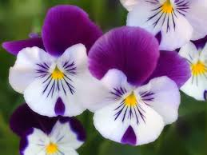
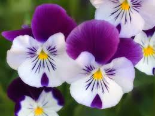

Door County
Wisconsin’s Door County Peninsula is ecologically diverse—upland and boreal forest, bogs, swamps, sand and rock beaches, limestone escarpments, and farmlands.
The variety of ecosystems supports a large number of wildflower species.

Explore the beauty
of Door County Wildflowers. . . .
With five state parks, tons of county parks, and private nature sanctuaries, Door County is teeming with natural areas for you to stalk your favorite wildflowers.